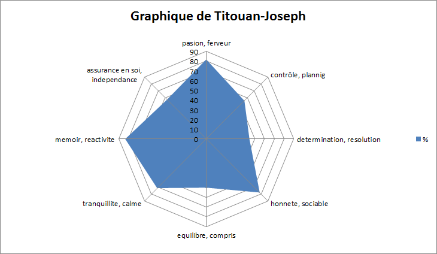
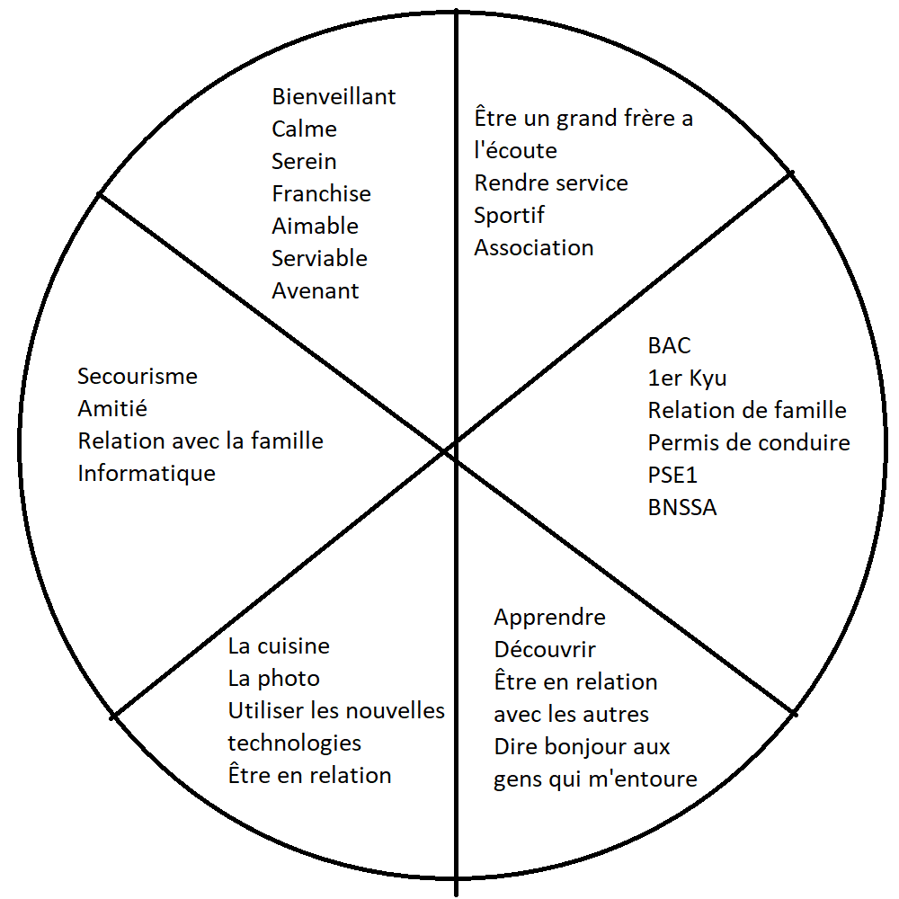

Quand je sais ce que je veux, je trouve toujours le bon moyen pour y arriver
1
X
Aujourd'hui est un jour nouveau qui peut-être comparé au passé
2
X
Le thème de la mort ne me fait pas peur
3
X
En me concentrant sur mes exépriences personelles, je trouve le bon moyen
4
X
Je me compare rarement aux autres
5
X
Il m'arrive de douter de mes aptitudes
6
X
Je sais contenir ma colère
7
X
Je suis observateur, je retiens très bien les détails
8
X
Quelquefois, je doute de la cohérence de mes actes
9
X
Je reconnais difficilement adopter le comportement de certaines personnes
10
X
Je respecte la pensée des autres car je comprends qu'il s'agit d'une perspective personnelle
11
X
Une nouvelle expérience ne modifie pas mon opinion
12
X
Il m'arrive d'avoir des trous de mémoire
13
X
Quand je dis quelque chose, ça correspond à ce que je pense
et non à ma motivation d'être mis en valeur
14
X
Les personnes de mon entourage m'admirent
15
X
J'hésite souvent entre 2 styles de vie sans pouvoir me décider
16
X
J'ai quelquefois peur d'oublier les élements dans un long discours
17
X
Je poursuis constament mes objectifs personnels et professionnels
18
X
J'arrive difficilement à motiver mes collègues et mon entourage
19
X
Je sais ce que je veux et fais tout pour l'obtenir
20
X
J'offre volontairement mon support à mes collègues
21
X
Je finis toujours une activité avant de me lancer dans la suivante
22
X
Mes relations sont basées sur une confiance réciproque
23
X
Je suis conscient que mon comportement vis-à-vis de certains collègues est influencé par mon opinion et mes sentiments
24
X
Je souhaite souvent être ailleurs ou faire autre chose
25
X
Je pense souvent à des personnes qui me servent de modèle
26
X
Quand j'ai oublié quelque chose, je le retrouve toujours en me souvenant d'un symbole ou d'une image associée
27
X
Je prépare toujours avec détail les tâches difficiles
28
X
Je ne suis pas toujours sûr de moi ou plein d'énergie
29
X
Je peux dire exactement ce que j'ai mangé à midi depuis 10 jours
30
X
Je découvre mes défauts en écoutant les critiques de mes collègues
31
X
Il m'est difficile de changer mes habitudes, même si je sais que c'est mauvais pour moi
32
X
Si j'ai le choix, je choisis toujours la solution qui me permettra de progresser
33
X
J'accepte mes défauts comme mes faiblesses
34
X
Je n'oriente pas mes pensées vers des situations négatives ou désagréables
35
X
J'apprécie l'aide des autres
36
X
Je formule toujours mes critiques sans blesser mais aussi sans mentir
37
X
Quand je suis face à un obstacle insurmontable, je reste bloqué et j'abandonne
38
X
J'accepte et respecte les règles de la société
39
X
J'aime les questions difficiles qui m'aident à découvrir mon vrai "moi"
40
X
J'ai du mal à accepter la critique
41
X
Je sais mentir sans me dévoiler
42
X
Je modifie mes habitudes quand je remarque qu'elles ne correspondent ni à mes valeurs, ni à mes objectifs personnels
43
X
Je suis conscient que je peux encore développer ma personnalité
44
X
Face aux comportements négatifs ou agressifs de mon entourage, j'essaye d'analyser et de comprendre les véritables sources du désaccord
45
X
Tous les matins, je planifie l'ensemble de ma journée
46
X
Je suis souvent passionné et enthousiaste
47
X
Dans une situation de conflit, j'essaye de comprendre ce que pense mon adversaire
48
X
Je reconnais facilement si la relation avec mon nouveau collègue est basées sur la confiance
49
X
J'aime les difficultés
50
X
Je sais et garde en mémoire que mon opinion des choses et des gens est subjective
51
X
J'utilise plus le courrier électronique que le téléphone
52
X
J'évite les situations où je dois rester passif
53
X
J'oublie quelquefois des tâches importantes
54
X
Je travaille pour corriger mes erreurs
55
X
Je connais mes forces et domaines d'expertise
56
X
Quand j'ai entrepris quelque chose, je le réalise jusqu'au bout
57
X
Je remarque que j'adopte l'attitude de personne qui me sont sympathiques
58
X
Je ne me perds pas dans les détails
59
X
Je ne m'énerve pas dans les embouteillages
60
X


Quelle est la part la plus remplie?
Les parts du cercle sont quasiment équivalentes, mais la plus remplie
est celle ou j'ai écris "ce que mes proches aiment de moi". C'est des choses
que j'entends souvent, donc j'ai plus de facilité à les trouver.
La moins remplie?
Celle qui est la moins remplie est "ce que je connais bien, en quoi,
je suis expert. Je mets la barre haute donc il m'est un peu plus difficile
de trouver des domaines où je suis vraiment expert. Je pense aussi que je suis encore
jeune, et j'ai encore beaucoup à découvrir pour me perfectionner.
Est-ce qu'il y a une ou des parts vides? Lesquelles ?
Il n'y a pas de parts vides, je pense me connaitre suffisement
pour mettre quelques mots dans chaque part en quelques minutes.